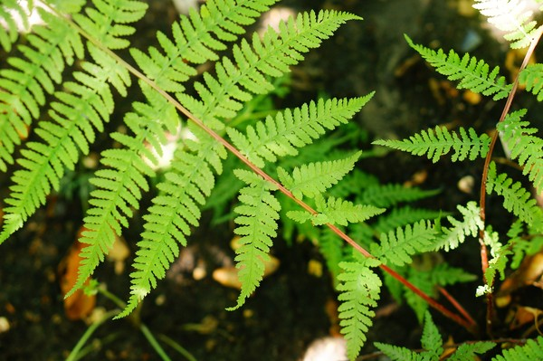
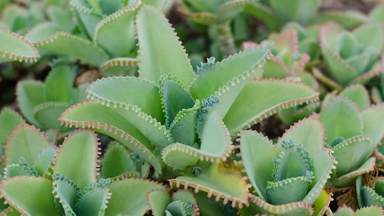
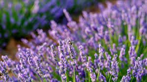

Tumbuhan Paku
Tumbuhan paku (Pteridophyta) adalah kelompok tumbuhan yang telah ada sejak zaman prasejarah. Mereka merupakan tumbuhan berbiji terbuka yang reproduksinya melalui spora. Tumbuhan paku mencakup berbagai jenis seperti paku tanduk rusa (Platycerium) dan paku suplir (Nephrolepis).
Tumbuhan paku dominan pada zaman Paleozoikum dan Mesozoikum. Mereka dapat ditemukan di berbagai habitat, mulai dari hutan tropis hingga tundra.

Tumbuhan Berbunga
Tumbuhan berbunga (Angiospermae) merupakan kelompok tumbuhan yang memiliki biji tertutup dalam buah. Mereka berkembang biak melalui bunga yang melibatkan proses penyerbukan. Contoh tumbuhan berbunga termasuk mawar (Rosa), anggrek (Orchidaceae), dan bunga matahari (Helianthus annuus).
Angiospermae merupakan kelompok tumbuhan yang paling dominan dan beragam di planet ini, menempati berbagai habitat dari padang rumput hingga hutan tropis.

Tumbuhan Lavender
Lavender (Lavandula) adalah genus tumbuhan berbunga dari keluarga Lamiaceae. Tumbuhan ini terkenal dengan aroma harumnya dan digunakan dalam berbagai produk seperti minyak aromaterapi, kosmetik, dan produk perawatan kulit.
Lavender banyak ditemukan di daerah dengan iklim mediterania dan sering dijadikan sebagai tanaman hias atau pengusir serangga alami.

Tumbuhan Melati
Melati (Jasminum) adalah genus tumbuhan berbunga dari suku Oleaceae. Tumbuhan ini dikenal dengan bunga yang harum dan sering digunakan sebagai hiasan atau bunga persembahan dalam budaya banyak negara di Asia Tenggara.
Di Indonesia, melati memiliki makna simbolis dalam berbagai upacara adat dan keagamaan, serta digunakan dalam industri parfum dan minyak esensial.

Tumbuhan Lumut
Tumbuhan lumut (Bryophyta) adalah kelompok tumbuhan yang tidak memiliki pembuluh untuk mengangkut air dan nutrisi. Mereka biasanya tumbuh di lingkungan yang lembab dan menjadi bagian penting dari ekosistem hutan tropis, tundra, dan wilayah yang lembab.
Walaupun lebih sederhana secara struktural dibandingkan tumbuhan lain, lumut memiliki peran vital dalam menjaga kelembaban tanah dan menyediakan habitat bagi berbagai mikroorganisme.

Tumbuhan Venus
Tumbuhan Venus (Dionaea muscipula) adalah tumbuhan karnivora yang terkenal dengan perangkapnya yang dapat menangkap serangga. Tumbuhan ini tumbuh di daerah rawa-rawa atau lahan berawa di Amerika Serikat bagian timur dan merupakan contoh unik adaptasi tumbuhan terhadap lingkungannya yang miskin nutrisi.
Tumbuhan Venus menggunakan perangkap berbentuk "mata" yang terbuka saat terdapat serangga yang terjebak di dalamnya, membantu tumbuhan ini mendapatkan nutrisi tambahan.